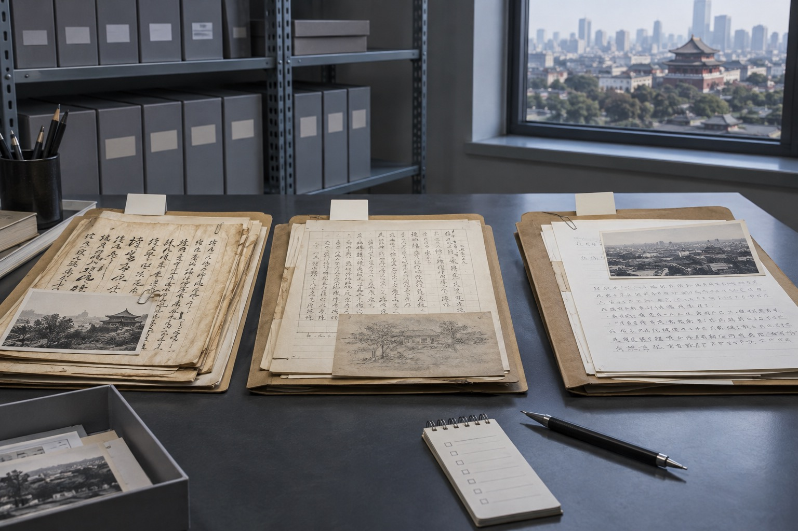

北京笔迹鉴定材料跨了几年，先做一张时间清单再比较
实际准备资料时，清楚通常比数量更重要。十张重复截图，很可能不如一张保留四边的原图有用。跨年份材料要区分早期、同期和近期样本，避免把自然变化误当成同一阶段的差异。这不是为了把资料做得复杂，而是让每一张图都能找到来处。

一张简单清单能省下反复确认
北京站整理模仿笔迹时，更关注连续文字的行距、字距、段落和页面留白；模仿签名通常围绕固定姓名的整体版本；模仿签字还可能连着日期、意见短句或表格栏位。笔迹鉴定所需材料则要明确原件状态、形成时间和自然对比样本。四类内容可以关联阅读，但不应无差别地堆进同一个文件夹。
回到原页，很多疑问自然会消失
搜索习惯中经常出现“需要什么样本”“手机照片可以吗”“原件和扫描件有什么区别”等问题。回答这些问题不能只给一句结论：先保留未经裁切的原图，再补充局部近照；文件名写明日期、页码和版本；重复件单独标注，才是可以实际执行的做法。
以这次的情况为例，跨年份材料要区分早期、同期和近期样本，避免把自然变化误当成同一阶段的差异。 如果材料来自不同设备，可在原文件名后加上“手机原图”“彩色扫描”或“聊天预览”，而不是反复改成最终版。这样既方便后续查看，也不会在传递过程中误删来源最清楚的一份。
不要覆盖最早收到的文件
检查时可以倒过来问三个问题：打开局部图能否找到对应整页，看到文件名能否判断形成时间，别人接手后能否分清正式版本与日常版本。三个问题都有答案，资料才算真正整理完成。
读者常问
手机照片可以作为整理材料吗？
可以先用于沟通，但应保留未经压缩的原图、完整页面和拍摄顺序。
模仿签名与模仿签字需要分开吗？
固定姓名的签名版本与带日期、短句的日常签字应按场景分组，同时保留来源关系。